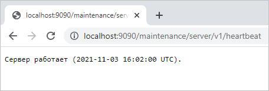
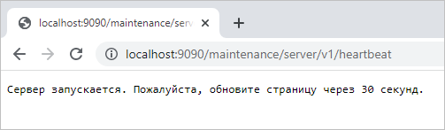
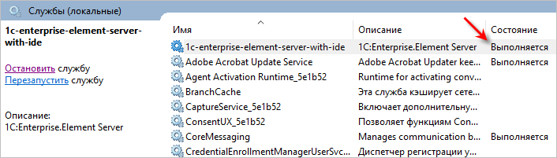
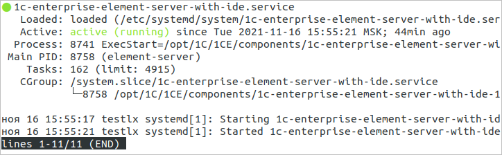
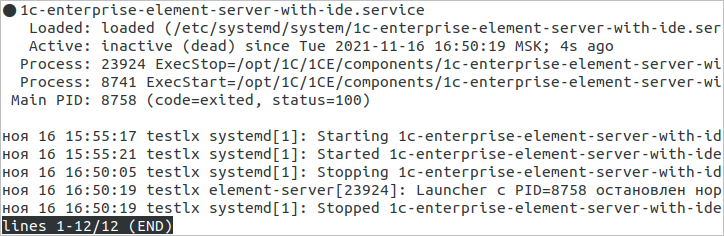

Как проверить работоспособность сервера
Чтобы проверить работоспособность сервера, вы можете обратиться к нему по HTTP-интерфейсу (из браузера, например) или можете узнать состояние службы/демона.
Проверка работоспособности из браузера
Чтобы проверить работоспособность сервера, установленного локально на стандартном порту, запустите браузер и введите в адресной строке:
http://localhost:9090/maintenance/server/v1/heartbeatЕсли сервер находится в работоспособном состоянии, вы увидите в браузере аналогичное сообщение:

Если вы хотите проверить работоспособность удаленного сервера, вместо localhost:9090 укажите IP-адрес удаленного компьютера и порт, который использует сервер.

Проверка состояния службы ОС Windows
Чтобы проверить состояние службы, выполните следующие действия:
- В строку поиска введите "службы" ("services");
- Запустите приложение Службы (Services);
- Найдите в списке службу 1c-enterprise-element-server-with-ide
и посмотрите ее
состояние:

Проверка состояния демона ОС Linux
systemctl status 1c-enterprise-element-server-with-ideЕсли демон работает, вы увидите аналогичное сообщение:

Если демон остановлен, сообщение будет выглядеть следующим образом:
